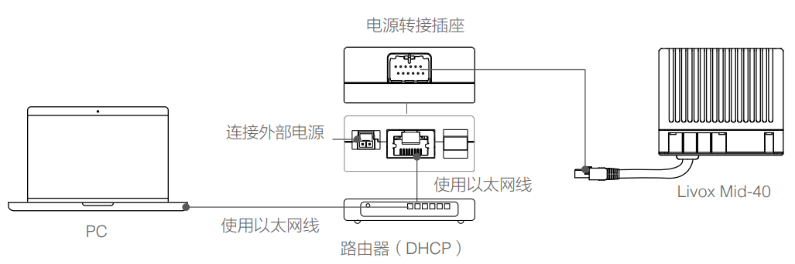

1. 单雷达数据采集¶
Note
连接雷达前请注意关闭系统防火墙，否则可能无法连接
1.1. 使用Livox Viewer采集数据¶
以Livox Mid-40为例：
软件依赖：Livox_Viewer(此部分软件安装见 驱动)(Win10或Ubuntu)
硬件部分：Livox-Mid 40、电源转接插座2.0或连接盒、以太网线、PC。
连接：物理连接如下图所示
若对连线及IP配置存在疑问，可参考Livox官网Livox觅道Mid用户手册“连线”部分，下载地址 Livox觅道Mid用户手册
采集：完成硬件连接后，在Ubuntu / Win10下打开Livox Viewer，下载地址如下所示：
Livox Viewer 0.8.0 for Windows
Livox Viewer 0.7.0 For Linux Ubuntu16.04_x64
启动终端后进入到解压缩后文件夹的根目录，运行指令``./livox viewer.sh`` 即可启动
若正确的连接了Lidar并完成了IP配置，此时Livox Viewer界面显示如下，左侧显示已连接的Livox Lidar的型号和15位广播码。

点击按钮启动Lidar,再点击播放按钮即可显示Lidar所采集到的点云图,如下所示：

采集成功后，可点击工具栏上的录制按钮进行lvx格式文件的录制，暂停播放或再次点击此按钮结束录制。
工具栏中包含多个按钮，可进行点云着色方案、点样式大小、帧积分时长等功能设置，详细介绍可见官网Livox Viewer用户手册。其下载地址为 Livox Viewer用户手册
Livox Viewer录制并保存文件的默认格式为lvx，在菜单中选择File->Save as可将当前点云另存为csv或las文件。
1.2. 使用ROS采集¶
以Livox Mid-40为例：
软件依赖：ubuntu 16.04、ROS、Livox-SDK、Livox_ROS_driver(此部分驱动的下载和安装详细过程见 驱动)
硬件部分：Livox-Mid 40 × 1、电源转接插座2.0或连接盒 × 1、以太网线（百兆或千兆） × 1、PC × 1
连接：物理连接如下图所示
若对连线及IP配置存在疑问，可参考Livox官网Livox觅道Mid用户手册“连线”部分，下载地址如下 Livox 觅道Mid用户手册
采集：
Lvx格式：
首先确认已从Git克隆Livox-SDK
$ git clone https://github.com/Livox-SDK/Livox-SDK.git
完成Lidar硬件及IP配置部分，在以下文件路径下打开终端窗口：
$ ../Livox_SDK/build/sample/lidar_lvx_file
执行以下命令连接Lidar，并设定记录的点云数据的持续时间为10s:
$ ./lidar_lvx_sample -c "此处为已连接的Lidar的15位广播码" -t 10


成功执行后，当前路径下即可生成采集好的lvx文件

bag格式：
Note
由于Horizon雷达内部集成了IMU，因此使用此方法记录Horizon雷达数据时包含两个Topic：分别是CustomMsg格式的点云数据和sensor_msgs/Imu格式的IMU数据。
1.连接好雷达后，在livox_ros_driver所在工作空间打开终端编译并更新当前ROS包环境：
$ catkin_make
$ source ./devel/setup.sh
2.使用ROS launch文件加载览沃ROS驱动：
$ roslaunch livox_ros_driver livox_lidar_rviz.launch
3.启动rviz并显示雷达画面后，使用record命令记录数据：
$ rosbag record -a